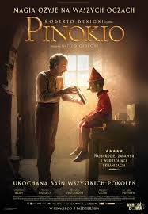
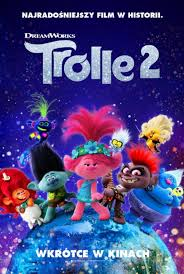
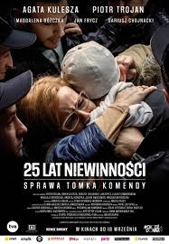
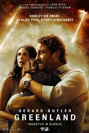

Opis filmu:
Życie Hunter stwarza pozory sielanki. Kobieta ma przystojnego, kochającego i wpływowego męża, który pochodzi z bardzo bogatej rodziny. Mieszkają w pięknym domu. Hunter nie musi pracować, może zajmować się domem i być idealną żoną idealnego męża. Tym bardziej że od niedawna jest w ciąży. Do tego idyllicznego obrazka nie pasuje tylko nieodparta chęć, jaką odczuwa Hunter. Zaczęło się od zjedzenia… szklanej kulki. Potem była pinezka, bateria i konsumowanie kolejnych przedmiotów, które do jadalnych z pewnością nie należą. Hunter będzie musiała skonfrontować się z mroczną tajemnicą, kryjącą się za tą obsesją. Nieprzewidywalna mieszanka thrillera i satyry, która stawia pytania dotyczące patriarchalnej kontroli kobiecego ciała, tożsamości, poczucia winy i przemocy. Co tak naprawdę skrywają idylliczne fasady?
PINOKIO

Opis filmu:
Pewnego dnia w ręce poczciwego stolarza o imieniu Gepetto wpada kawałek drewna. Mężczyzna od samego początku czuje, że w tym z pozoru martwym przedmiocie kryje się jakaś magiczna siła. Postanawia wystrugać z niej postać chłopca. Niespodziewanie stworzona przez niego figurka ożywa – potrafi mówić, śmiać się, skakać i biegać. Gepetto nadaje mu imię: Pinokio i zaczyna troszczyć się o niego jak o własnego syna. Drewniany chłopczyk jest tak zafascynowany otaczającym go światem, który widzi po raz pierwszy na oczy, że przestaje słuchać dobrych rad opiekuna. Wiedziony ciekawością, Pinokio wyrusza w podróż pełną przygód, niebezpieczeństw i życiowych lekcji. Na swojej drodze spotyka magiczną wróżkę, olbrzymiego ślimaka, zwierzęta mówiące ludzkim głosem, a nawet zwiedza ogromny brzuch wieloryba. Jego śladami wyrusza zaniepokojony Gepetto. Ta wyprawa na zawsze odmieni ich życie.
TROLE 2

Opis filmu:
Queen Poppy i Branch odkrywają, że poza ich wioską istnieją inne światy zamieszkane przez Trolle, z którymi – by tak rzec – jakoś im nie po drodze. Kiedy niespodziewane niebezpieczeństwo zagrozi całej populacji Trolli, Poppy i Branch oraz ich przyjaciele wyruszą w wielką podróż przez nowe – niebezpieczne – lądy, by dokonać niemożliwego: pogodzić ze sobą wszystkie Trolle i połączyć się przeciw wrogowi.
25 LAT NIEWINNOŚCI. Sprawa Tomka Komendy

Opis filmu:
Oparty na prawdziwych wydarzeniach dramat sensacyjny przedstawiający życie Tomasza Komendy - młodego mężczyzny niesłusznie skazanego na 25 lat więzienia za gwałt i zabójstwo nastolatki. Po 18 latach odsiadki, na jego drodze pojawili się prokuratorzy i policjant, którzy postanowili odkryć prawdę stojącą za zagadkową sprawą zatrzymanego.
GREENLAND

Opis filmu:
Bohaterami „Greenlandu” są członkowie rodziny Garrity. John (w tej roli Gerard Butler), Allison (Morena Baccarin) oraz ich synek Nathan przechodzą właśnie kryzys, gdy cały świat dowiaduje się, że do Ziemi zbliża się kometa Clarke. Z początku miała ona ominąć naszą planetę, ale okazało się, że naukowcy się pomylili i obecnie ludzkości zostały 2 dni, zanim największy kawałek ciała obcego uderzy w Europę i tym samym zmiecie z powierzchni Ziemi większość życia na kuli ziemskiej.
Na szczęście dla naszych bohaterów, rodzina Garrity została wybrana przez amerykański rząd do tego, by udać się do atomowego schronu, znajdującego się na odległej Grenlandii. Dotarcie tam wcale nie będzie takie łatwe. Sytuacji nie poprawia fakt, że syn Johna i Allison choruje na cukrzycę.
JAK ZOSTAĆ GWIAZDĄ
Opis filmu:
Kontrowersyjny program telewizyjny „Music Race” poszukuje muzycznych talentów na terenie całej Polski. O tym, przed kim otworzą się wszystkie drzwi, a komu na głowie wyląduje kubeł zimnej wody, zdecyduje wyjątkowe jury: niegdyś popularny piosenkarz Olo (Maciej Zakościelny), królowa social mediów Ewa (Julia Kamińska) i grająca samą siebie pierwsza dama polskiego jazzu – Urszula Dudziak. Na castingu, który odbywa się w rodzinnej miejscowości Ola, dochodzi do awantury. Doprowadza do niej „Ostra” (Katarzyna Sawczuk) – zbuntowana nastolatka, oburzona arogancją jurora, który lekceważąco zachowuje się wobec matki dziewczyny (Anita Sokołowska). Skandal jest na rękę producentowi (Tomasz Karolak), który decyduje o zakwalifikowaniu „Ostrej” do dalszego etapu show. Wkrótce okaże się, że oprócz wybuchowego temperamentu, dziewczyna dysponuje także niesamowitym głosem. Sukces ma jednak swoją cenę, a popularność nie jest tak przyjemna, jak może się wydawać. Przed nastolatką prawdziwy pojedynek i próba charakteru – młodej gwieździe przyjdzie zmierzyć się z konkurentami na scenie i bezwzględnym światem show-biznesu, ale przede wszystkim z własnymi emocjami.
PĘTLA
Opis filmu:
Patryk Vega powraca do „Służb Specjalnych” i „Pitbulla” z najnowszym filmem „Pętla”. Pokazuje prawdziwą historię siatki klubów nocnych kontrolowanych przez agenta CBŚP, która stała się elementem gry ukraińskich i rosyjskich służb specjalnych poprzez sekstaśmy z udziałem polityków, celebrytów, duchownych i innych osób z pierwszych stron gazet.
Vega pozyskał do współpracy nie tylko wszystkich kluczowych uczestników tego procederu, ale również posiada nagrania z ukrytych kamer.